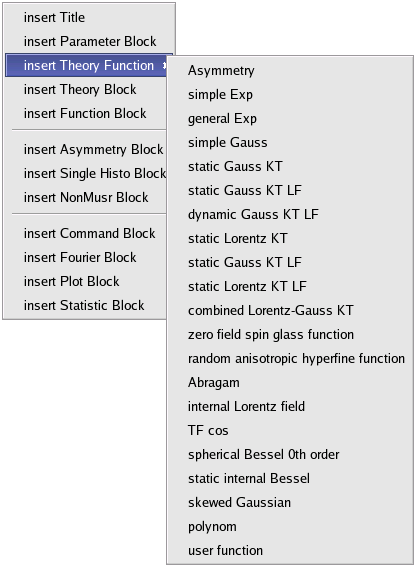

musredit / (musrgui)
1 Introduction
musredit and musrgui are editors which also provide a graphical user interface to the programs contained in the musrfit suite and are intended to help the user handle musrfit msr files. They are implemented in C++ and use the Qt framework. Principally, musrgui and musredit are doing the same, but are based on different Qt versions. musrgui is based on Qt 3.x and will only be maintained on bug-fixing level since the Qt 3.x licensing is less straight forward than the Qt 4.x one. musredit is based on Qt 4.6 (or above) and this is the program which will be developed further.On this documentation page only the features related to
musrfit are described—the basic editor functions which should be self-explanatory are not.
Before going on using musrgui / musredit it is strongly recommended to read the manual of musrfit first!
2 Available Executables, Configuration Files and their Basic Usage
2.1 musredit / (musrgui)
musredit / musrgui are the editor executables. If called from within a shell they accept a few optional parameters: - <msr_files>
- file names of the msr files that should be opened in separate editor tabs on startup of
musrgui/musredit. - --help
- displays a small help notice in the shell explaining the basic usage of the program
- --version
- prints the version number of
musrgui/musredit
2.2 musredit_startup.xml / musrgui_startup.xml
musredit_startup.xml / musrgui_startup.xml are configuration files located at the musredit / musrgui binary path. It is also possible to have another version of this file in the working directory which then will be used!
In this file the following XML tags are allowed to define settings and might proof useful for all users of musredit / musrgui: - <general></general>
- set the default paths to executables and files in this environment
- <exec_path>PATH_TO_EXEC</exec_path>
- set the path PATH_TO_EXEC where the executables
musrfit,musrview,musrt0, etc. can be found (inside the <general> environment) - <default_save_path>SAV_PATH</default_save_path>
- specify the path SAV_PATH where
musrgui/musreditpoint by default when opening and saving msr files (inside the <general> environment) - <msr_default_file_path>MSR_DEF_PATH</msr_default_file_path>
- set the path MSR_DEF_PATH where the default msr files provided by
musrguiare stored (inside the <general> environment) - <title_from_data_file>y/n</title_from_data_file>
- specify if
musrfitshould be called with the -t option by default (inside the <general> environment) - <enable_musrt0>y/n</enable_musrt0>
- specify if
musrt0can be called from withinmusrgui/musredit(inside the <general> environment)
- <font_settings></font_settings>
- set the default font in this environment
- <font_name>FONT</font_name>
- specify the name of the font FONT to be used by default in
musrgui/musredit(inside the <font_settings> environment) - <font_size>N</font_size>
- specify the size N of the font to be used by default in
musrgui/musredit(inside the <font_settings> environment)
- <msr_file_defaults></msr_file_defaults>
- put the default settings for newly created msr files in this environment
- <beamline>BL</beamline>
- set the name of the muon beamline BL here (inside a <msr_file_defaults>-environment)
- <institute>INST</institute>
- set the name of the facility INST where the beamline BL is located. Valid settings are PSI, RAL, JPARC, and TRIUMF (inside a <msr_file_defaults> environment)
- <file_format>FF</file_format>
- specify the default data file format FF here. Valid formats are NEXUS, ROOT-NPP, ROOT-PPC, PSI-BIN, PSI-MDU, MDU-ASCII, WKM, MUD, ASCII, and DB (inside a <msr_file_defaults> environment)
- <lifetime_correction>y/n</lifetime_correction>
- choose if by default the lifetimecorrection option should be set (inside a <msr_file_defaults> environment)
- <msr2data_defaults></msr2data_defaults>
- define the default options for calling
msr2datain this environment; the options set here are ticked by default in the graphical interface ofmusrgui/musredit.- <chain_fit>y/n</chain_fit>
- (un)set the chain fit (!) option (inside a <msr2data_defaults> environment)
- <write_data_header>y/n</write_data_header>
- (un)set the noheader option (inside a <msr2data_defaults> environment)
- <ignore_data_header_info>y/n</ignore_data_header_info>
- (un)set the nosummary option (inside a <msr2data_defaults> environment)
- <keep_minuit2_output>y/n</keep_minuit2_output>
- (un)set the -k option (inside a <msr2data_defaults> environment)
- <write_column_data>y/n</write_column_data>
- (un)set the data option (inside a <msr2data_defaults> environment)
- <create_msr_file_only>y/n</create_msr_file_only>
- (un)set the msr option in case a template run is specified (inside a <msr2data_defaults> environment)
- <fit_only>y/n</fit_only>
- (un)set the fit option in case no template run is specified (inside a <msr2data_defaults> environment)
- <global>y/n</global>
- (un)set the global option (inside a <msr2data_defaults> environment)
- <global_plus>y/n</global_plus>
- (un)set the global+ option (inside a <msr2data_defaults> environment)
- <recreate_data_file>y/n</recreate_data_file>
- (un)set the
musrgui/musreditoption for recreating the output file (inside a <msr2data_defaults> environment) - <open_file_after_fitting>y/n</open_file_after_fitting>
- (un)set the
musrgui/musreditoption for opening msr files after fitting (inside a <msr2data_defaults> environment)
musrgui / musredit: - <help_section></help_section>
- define various help messages in this environment
- <help_main>HELP TEXT</help_main>
- set the main help message HELP TEXT here (inside a <help_section> environment)
- <func_pixmap_path>PIX_PATH</func_pixmap_path>
- set the path PIX_PATH to pixmaps visualizing the various supported theory functions
- <theory_functions></theory_functions>
- define the functions for a msr file's THEORY block according to the correct syntax in this environment
- <func></func>
- specify a function here (inside a <theory_functions> environment)
- <name>NAME</name>
- the NAME of the function in the msr file (inside a <func> environment)
- <comment>COMMENT</comment>
- description of the used parameters (inside a <func> environment)
- <label>LABEL</label>
- LABEL of the function in the
musrgui/musreditmenu (inside a <func> environment) - <pixmap>PIXMAP</pixmap>
- picture used to describe the function and stored in the PIX_PATH (inside a <func> environment)
- <params>N</params>
- number of parameters N used by the function (inside a <func> environment)
musrgui_startup.xml looks like:
<?xml version="1.0" encoding="UTF-8"?>
<musrgui_startup xmlns="https://intranet.psi.ch/MUSR/MusrGui">
<general>
<exec_path>/usr/local/bin</exec_path>
<default_save_path>./</default_save_path>
<msr_default_file_path>/home/user/analysis/musrfit/src/musrgui</msr_default_file_path>
</general>
<font_settings>
<font_name>Courier New</font_name>
<font_size>10</font_size>
</font_settings>
<msr_file_defaults>
<beamline>mue4</beamline>
<institute>psi</institute>
<file_format>root-npp</file_format>
<lifetime_correction>y</lifetime_correction>
</msr_file_defaults>
<msr2data_defaults>
<chain_fit>y</chain_fit>
<write_data_header>y</write_data_header>
<ignore_data_header_info>n</ignore_data_header_info>
<keep_minuit2_output>n</keep_minuit2_output>
<write_column_data>n</write_column_data>
<recreate_data_file>n</recreate_data_file>
<open_file_after_fitting>y</open_file_after_fitting>
<create_msr_file_only>n</create_msr_file_only>
<fit_only>n</fit_only>
<global>n</global>
<global_plus>n</global_plus>
</msr2data_defaults>
<help_section>
<help_main>
For a detailed description of the aim and structure of a msr file see http://lmu.web.psi.ch/facilities/software/musrfit/user/MUSR/MusrFit.html
</help_main>
</help_section>
<func_pixmap_path>/home/user/analysis/musrfit/src/musrgui/latex_images</func_pixmap_path>
<theory_functions>
<func>
<name>asymmetry</name>
<comment></comment>
<label>Asymmetry</label>
<pixmap>asymmetry.png</pixmap>
<params>1</params>
</func>
<func>
<name>simplExpo</name>
<comment>(rate)</comment>
<label>simple Exp</label>
<pixmap>simpleExp.png</pixmap>
<params>1</params>
</func>
<func>
<name>simplGss</name>
<comment>(rate)</comment>
<label>simple Gauss</label>
<pixmap>simpleGauss.png</pixmap>
<params>1</params>
</func>
</theory_function>
</musrgui_startup>
3 musrfit Features
The features of musrfit which can be accessed by the graphical front ends musrgui / musredit are described in the following. All functions can either be called by choosing them from the MusrFit menu, by clicking the respective button in the MusrFit bar, or by using a keyboard shortcut.
$ Asymmetry Default (Alt+a): Generate a full msr file suitable for the fit type 2 of musrfit from defaults. Calling this function opens a window where the relative path and file name to a data file as well as the file format that should be used have to be specified. For instance if the data file /path-to-datadir/2007/lem07_his_8472.root should be used and /path-to-datadir is on the path where musrfit looks for data files then the file name would be 2007/lem07_his_8472 and the file format either ROOT-NPP or ROOT-PPC.
$ Single-Histogram Default (Alt+h): Generate a full msr file suitable for the fit type 0 of musrfit from defaults. Calling this function opens a window where the relative path and file name to a data file as well as the file format that should be used have to be specified. For instance if the data file /path-to-datadir/d2007/deltat_pta_gps_8472.bin should be used and /path-to-datadir is on the path where musrfit looks for data files then the file name would be d2007/deltat_pta_gps_8472 and the file format PSI-BIN.
$ Calculate Chisq (Alt+c): musrfit <msr_file> --chisq-onlyis called for the <msr_file> selected in the editor. For further information refer to the manual of
musrfit.
$  Fit (Alt+f):
Fit (Alt+f): musrfit <msr_file> [optional parameters]is called for the <msr_file> selected in the editor. The optional parameters may be chosen under Preferences. For further information refer to the manual of
musrfit.
$ Swap Msr ↔ Mlog (Alt+s): Swap the msr and mlog files. E.g., for a file called 8472_zf.msr, this is copied to 8472_zf.mlog and vice versa.
$  Msr2data (Alt+m): Opens a graphical interface to the
Msr2data (Alt+m): Opens a graphical interface to the msr2data program described in detail in its own manual.
$  View (Alt+v):
View (Alt+v): musrview <msr_file>is called for the <msr_file> selected in the editor. For further information refer to the manual of
musrfit.
$  T0 (Alt+t):
T0 (Alt+t): musrt0 <msr_file>is called for the <msr_file> selected in the editor. For further information refer to the manual of
musrfit.
$  Raw Fourier:
Raw Fourier: musrFT <with-many-options> is called. For a proper documentation of it, check the manual of musrFT.
$ Preferences (Alt+p): Opens a window in which the optional parameters that should be passed to musrfit can be chosen. These options are --keep-mn2-output, --dump ascii, --dump root, and --title-from-data-file. For further information refer to the manual of musrfit. Additionally, the access to musrt0 can be enabled temporarily.
$ Dump Header: Opens a file dialog which allows to select a μSR data file. When this file can be read, the run header info is dumped into a dialog window. Essentially this calls dump_header internally.
4 Editor Features
Besides the functions described above and which are mostly interfacingmusrfit/msr2data the editors of musrgui / musredit offer various functions for manipulating especially musrfit msr files:
 - Upon right-clicking an open msr file a menu as shown to the right is displayed which offers the addition of any valid msr file block or theory function. In case a simple theory function is chosen, the function will be inserted into the THEORY block using the correct syntax. If one chooses to add a whole block to the file a dialog opens in which the necessary information for each block as described in the manual of
musrfitcan be supplied. This feature is available only inmusrgui. Inmusreditthe respective functions can be accessed through the Edit menu. - In order to comment or uncomment lines in a msr file select the according lines and apply Edit → (Un)Comment or use the keyboard shortcut Ctrl+(Shift)+m.
5 Bugtracking
For reporting bugs or requesting new features and improvements please use the Bitbucket Tracker, PSI Tracker (PSI account needed) or send an e-mail to A. Suter. -- AS & BMW

| I | Attachment | Action | Size | Date | Who | Comment |
|---|---|---|---|---|---|---|
| |
musrgui-editor-v0.png | manage | 37 K | 10 Apr 2009 - 14:53 | UnknownUser | musrgui options available upon right clicking a open msr-file |
Ideas, requests, problems regarding PSI Wiki? Send feedback

{kind=link}
{kind=link}